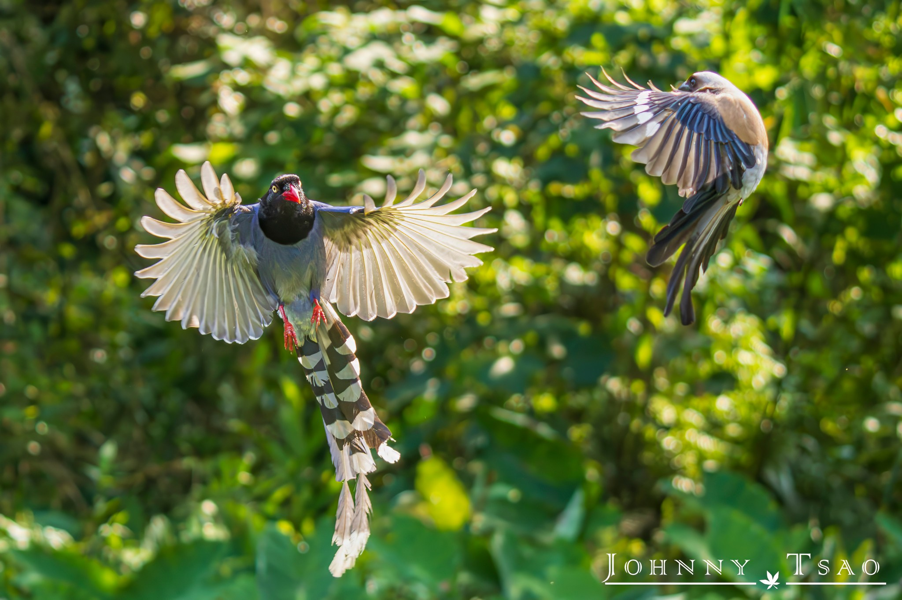
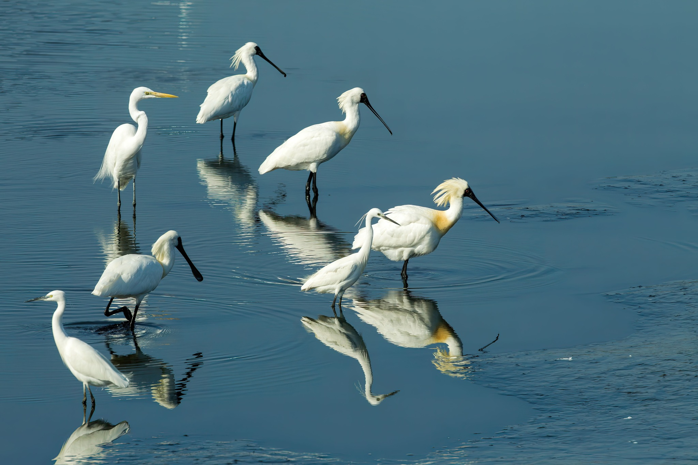

Taiwan Biological Diversity Map
Leopard Cat (Taiwan native species)
The image is from Taipei Zoo's facebook page.
Formosan Blue Magpie (Taiwan native species)

The image is from JohnnyTsao's facebook page.
Black-faced Spoonbill (Taiwanese seasonal migratory birds)

The image is from the Ministry of the Interior of Taiwan's Facebook page.